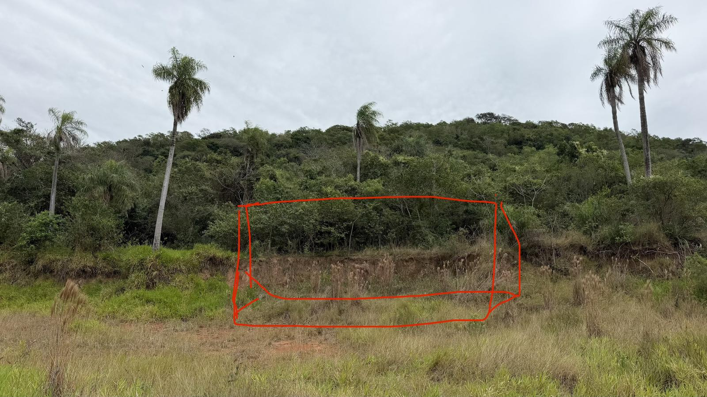
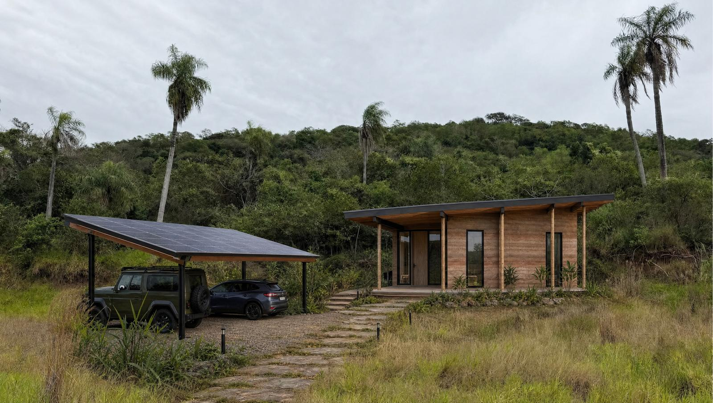
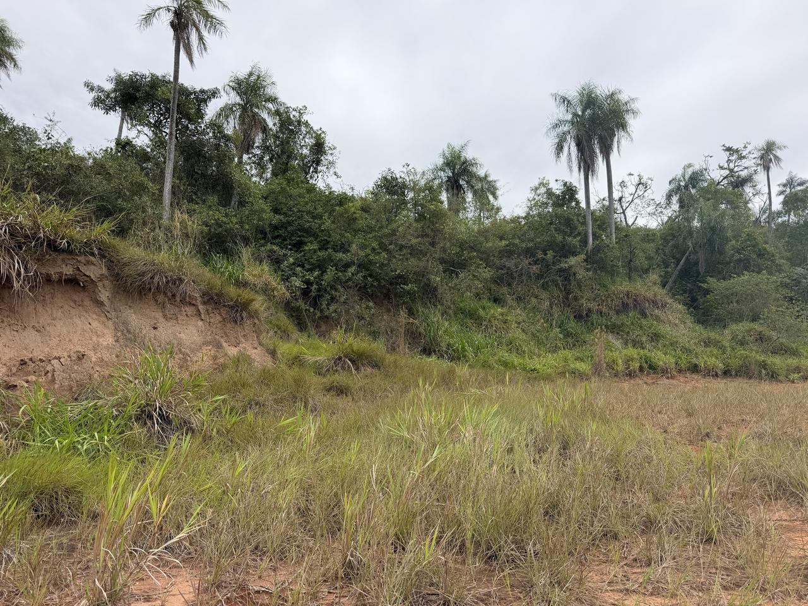
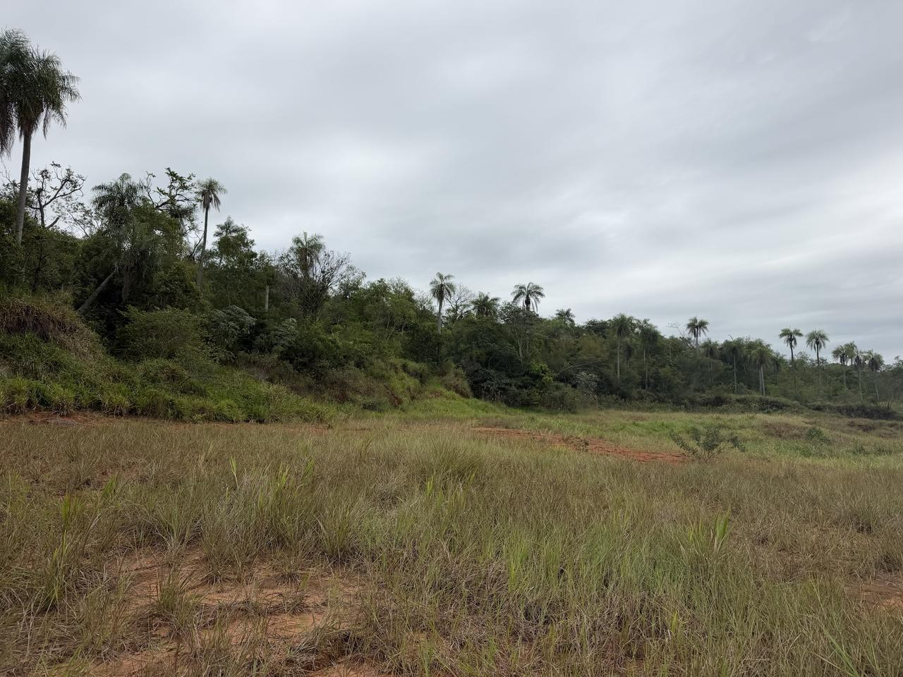
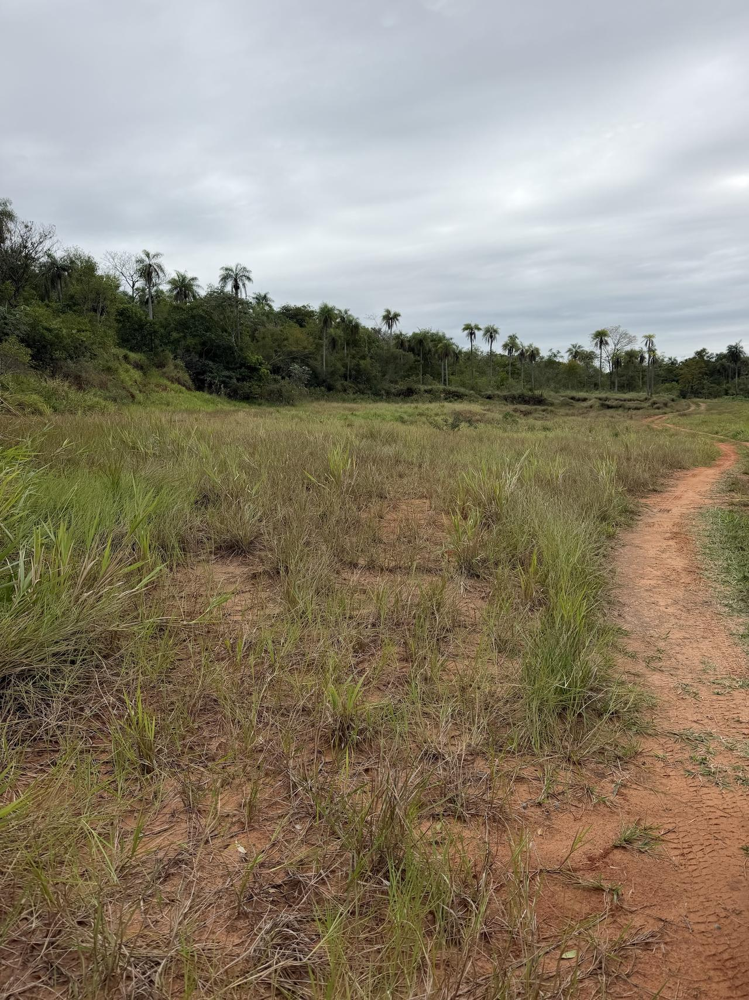
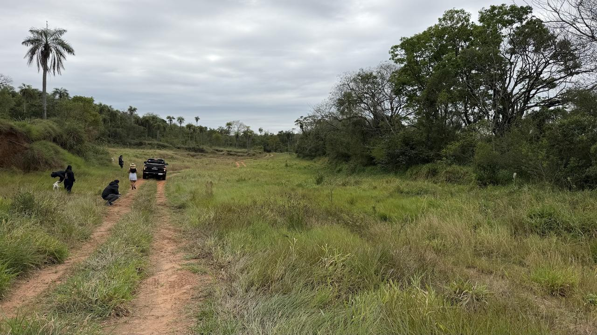
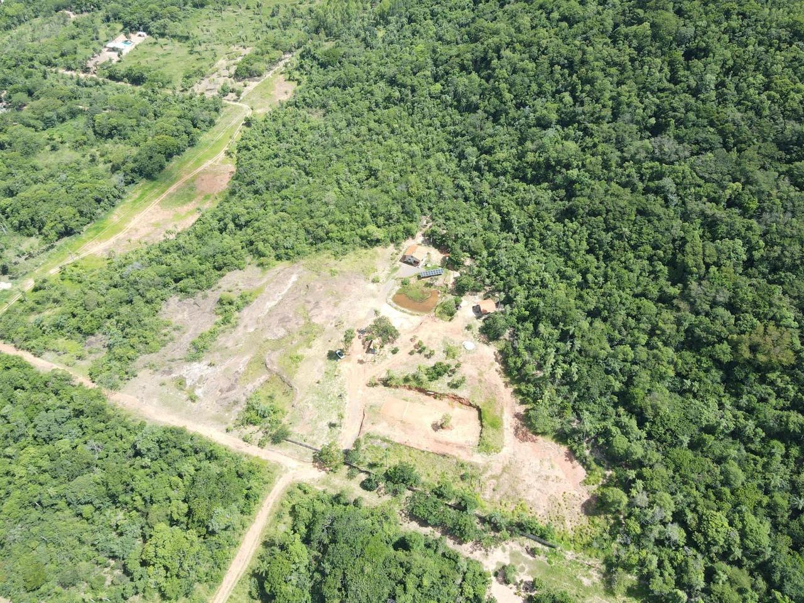
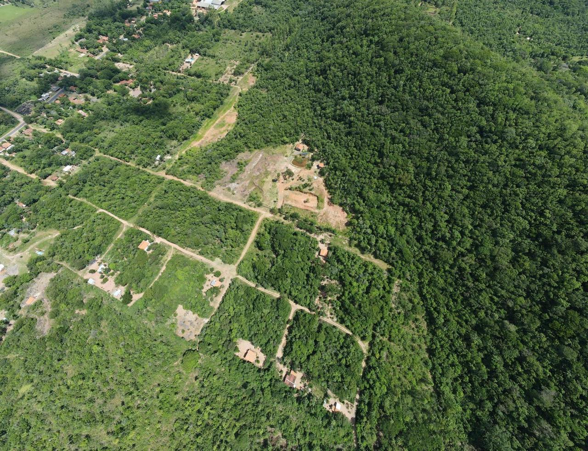

Cerro Kavaju · Cordillera, Paraguay
One property, two sides, one forest behind them
Outer Heaven runs along the foot of Cerro Kavaju, a protected hill between Caacupé, Atyrá and Tobatí. Part of it opens to guests as a glamping retreat. The rest is a private community for family and friends. Both share the same solar power, water and staff.
Glamping cabins, a natural pond, the tennis court
Eight cabins dug into the bank at the forest edge, each facing the view. Guests share a swimming pond cleaned by plants, the court, a food forest and the trail up the valley.
About eight homesites of roughly one hectare
The quieter part of the land, closer to the summit. Kybo and Kian Betancourt are buying the first hectare. Homes use the same earth walls and living roofs as the cabins and plug into the shared energy and water systems.
The bank today, and a cabin in it


TodayConcept





Cabin numbers
What one cabin earns
Move the sliders. The model is simple on purpose: nights sold times the nightly rate, minus running costs and the operator's fee. The default case is the middle one, and every input is an estimate until the first season of bookings.
Running costs cover cleaning, laundry, booking-site commissions, supplies, maintenance and insurance.
| Scenario | Rate | Booked | Rent / cabin | Net / cabin | Return | Payback |
|---|
Why 45% booked in the base case: Friday and Saturday nights alone are 29% of the year. Long weekends, holidays and some weekday retreats fill the rest. Cautious assumes weekends only and a lower rate; strong assumes the cabins become a destination.
Homesites
The private side pays for what both sides share
Selling homesites on the private side can fund the pond, the hub, the roads, the water and the battery room. The cabins then only have to pay for themselves.
Delivery covers survey and title, the lane, and water and power to the lot line. Houses are built by each owner, or by us at roughly $900–1,100 per m².
| Shared infrastructure, phase 1 | Estimate |
|---|---|
| Natural swimming pond, about 1,000 m² | $40,000 |
| Hub: reception, laundry, staff room, storage | $40,000 |
| Solar expansion and battery room (≈30 kWp, ≈100 kWh) | $60,000 |
| Gravel access road, parking, paths | $30,000 |
| Water: well, tanks, filtration, wastewater wetland | $30,000 |
| Design, environmental license, permits | $20,000 |
| Contingency, 10% | $22,000 |
| Total | $242,000 |
Context: raw land near the Caacupé–Atyrá road lists at about $75,000–95,000 per hectare. $150,000 per hectare is a premium that the shared power, water, security, pond, court and protected-forest views have to earn.
Market
What comparable stays charge
Glamping in Paraguay is young. The closest comparable is Tava in San Bernardino, on the other side of the same Cordillera hills. Paraguayan hotels ran at 61% occupancy in the first half of 2026, and holiday weeks sell out.
| Place | Where | What | Per night | Notes |
|---|---|---|---|---|
| Tava Glamping | San Bernardino, Cordillera | Raised wood and bamboo cabins by Lake Ypacaraí | $120–130 | Listings range $57–182 by room and date |
| Nomade Glamping | Yaguarón–Pirayú, Paraguarí | 4 tents on 2 ha | ≈ $120–150 | G 800,000–990,000 for two, at about G 6,700 per US$ |
| Vista Alegre Natural Resort | Independencia, Guairá | Villas and bungalows | $118–156 | Resort format, not glamping |
| San Bernardino short-term rentals | Cordillera | 329 active Airbnb listings | $191 avg | 21% average occupancy; mostly holiday homes |
| Asunción hotels, H1 2026 | Asunción | 400+ hotels surveyed nationwide | $96 avg | 64% occupancy in Asunción, 61% nationally |
| Outer Heaven cabin | Cerro Kavaju, Cordillera | Rammed-earth cabin, pond, court, food forest | $150–200 | Base case $170 at 45% booked |
Self-sufficiency
Sun, rain, soil and shade
The goal is a site that runs without the grid. The design starts by needing less: thick earth walls, living roofs and the hill's own afternoon shade cut the cooling load in summers that reach 38 °C.
Solar carports and one battery room
Panels and a 15 kWh battery already run the house. Phase 1 grows that to roughly 30 kWp and 100 kWh (a sizing estimate): about 3 kWp per cabin over the parking, plus the hub and the pond pump. Paraguay averages about 4 kWh per installed kWp per day.
Rain first, the well as backup
Around 1,400–1,600 mm of rain falls here a year. A 38 m² carport roof catches roughly what one cabin's guests use in a year at 45% booked, into a 10,000 L tank. A well and filtration cover dry spells.
Biodigesters and a reed-bed wetland
Wastewater is treated on site and kept well away from the swimming pond. Kitchen scraps go to compost for the food forest.
A food forest along the corridor
Orchard, vegetable beds and chickens between the two sides. Breakfast baskets come from it; the rest comes from farms in Atyrá, Tobatí and Caacupé.
Phases
Build in the order the money arrives
- Now – early 2027
Paper and pre-sales
Survey the boundary, environmental license, subdivision approval, cabin design, a soil test for the walls. The Betancourt hectare closes and the next homesites are reserved.
- 2027
Four cabins, the pond, the hub
Shared infrastructure goes in with the first four cabins. Opening season tests the rate and the occupancy.
- 2027 – 2028
Eight cabins and the first homes
Four more cabins once bookings prove out. The first houses go up on the private side.
- Later
Up to twelve cabins, events, retreats
Only if occupancy holds above about 50%. Weekday retreats and small events fill the gaps.
To confirm
What has to be true
- The boundary sits outside the protected area. Cerro Kavaju is public land under Law 5377/2014 and the protected-areas regime of Law 352/94, with a management plan for 2025–2035. A survey has to confirm where the property ends and what the plan allows on neighbouring land.
- Environmental license. A tourism project needs an environmental impact study approved by MADES before building.
- Subdivision and titles. The private side needs municipal approval to split into homesites, and a clean title for each.
- The road. Red earth turns to mud after rain. The access road needs gravel before the first guest arrives.
- Weekday demand. Asunción fills weekends. Weekdays need retreats, foreign visitors and events.
- The rate. $170 is above every glamping comparable we found. The design, the pond and the court have to justify it, and the first season will tell.
- Currency. Most bookings will be paid in guaraníes; some build costs are in dollars.
- The map. The 3D hill is built from satellite elevation, imagery and tree-height data, accurate to a few metres. Boundaries come from the title plans; a drone survey of the property would sharpen the terrain to centimetres.
Ways in
Starting points for the conversation
Terms are open. These are the shapes that fit the plan.
From $60–70k
Pay for one cabin. We run it and you take the net after running costs and the operator fee. Use it yourself a set number of nights a year.
From $150k
About a hectare on the private side, with shared energy, water and staff. Build your own house or have us build it.
About $240k
The pond, hub, roads, water and battery room. Repaid from homesite sales, or turned into a stake in the operating company.
Sources and notes
- Tava Glamping rates (Glamping.com) and Tripadvisor
- Nomade Glamping
- Lodges in Paraguay (Booking.com)
- AirROI Paraguay short-term rental markets, 2026
- Hotel occupancy, first half of 2026 (El Inmobiliario); Holy Week 2026 at 90% (MercoPress)
- Construction cost per m² in Paraguay, 2026 (ED Constructora)
- Land listings in Atyrá and Caacupé (InfoCasas)
- Law 5377/2014, Cerro Kavaju protected landscape; Kavaju management
- Cerro Kavaju profile (La Nación); coordinates (Mapcarta)
- 3D model: Copernicus DEM GLO-30, Meta and WRI 1 m canopy height, Sentinel-2 imagery, ESA WorldCover and Overture Maps.
- Infrastructure, energy and water sizing, and the cabin and pond budgets, are our estimates for discussion.